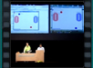
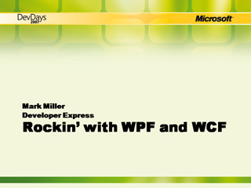
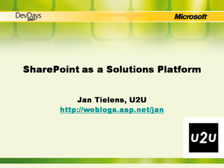
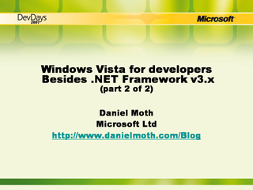
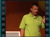
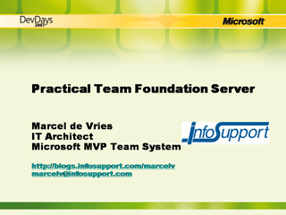
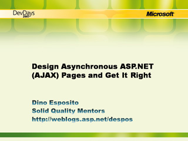
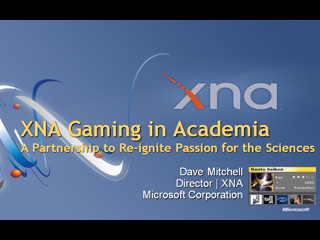
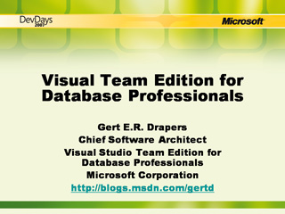
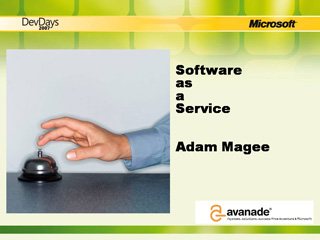

Keynote: Silverlight
 Speaker(s): Scott Guthrie
Speaker(s): Scott Guthrie
Programming with Reflection and Custom Attributes
Speaker(s): Francesco Balena
First Look at ASP.NET and Visual Studio 'Orcas'
Speaker(s): Scott Guthrie
ASP.NET AJAX Controls and Partial Rendering
Speaker(s): Dino Esposito
WCF and WF: Stateful Services
 Speaker(s): Ingo Rammer
Speaker(s): Ingo Rammer
Profiling and Optimizing .NET Applications
Speaker(s): Ingo Rammer
Programming SQL Server 2005 Service Broker
Speaker(s): Gert Drapers
Rockin' with WPF and WCF


Speaker(s): Mark Miller
Developing Web Parts, the Smart Way
Speaker(s): Jan Tielens
Windows Vista for Developers, Besides .NET Fx 3.x (Part 1 of 2)
Speaker(s): Daniel Moth
SharePoint as a Solution Platform

Speaker(s): Jan Tielens
Windows Vista for Developers, Besides .NET Fx 3.x (Part 2 of 2)

Speaker(s): Daniel Moth
Live Mashups Bouwen
Speaker(s): Serge van Schie
SQL Server Integration Services for Developers
Speaker(s): Darren Green
Applied LINQ: Putting LINQ to Work
Speaker(s): Alex Thissen
Using Data in Visual Studio Tools for Office Solutions
Speaker(s): Michael J. Hernandez
Business Intelligence with SQL Server 2005 and 2007 Office system

Speaker(s): Marcel Westra
Developing on Microsoft Office
Speaker(s):
Service Oriented Architecture: From Architecture to .NET 3.0 implementation
Speaker(s): Reinhard Brongers, Donald Hessing
Practical Team Foundation Server

Speaker(s): Marcel de Vries
Web Services Software Factory
Speaker(s): Clemens Reijnen
LINQ: Waarvoor Gebruikt u Het?
Speaker(s): Beat Nideröst
Best Practices for Microsoft Dynamics CRM
Speaker(s): Steven Brom
WCF Service Model Internals and Extensibility
Speaker(s): Gijs de Jong
"Longhorn" Transactional File System
Speaker(s): Erno de Weerd
Advanced VB2005 Programming
Speaker(s): Francesco Balena
Designing Asynchronous ASP.NET (AJAX) Pages and Get It Right

Speaker(s): Dino Esposito
Building Silverlight Applications using .NET (Part 1)
 Speaker(s): Scott Guthrie
Speaker(s): Scott Guthrie
Building Silverlight Applications using .NET (Part 2)
Speaker(s): Scott Guthrie
ASP.NET: Inside Runtime Components
Speaker(s): Dino Esposito
WPF Introduction
Speaker(s): Peter Himschoot
XNA Gaming in Academia

Speaker(s): Dave Mitchell
XNA Game Studio Express: Programming Your Xbox 360
Speaker(s): Rob Miles
Fun with Regular Expressions
Speaker(s): Francesco Balena
Visual Studio 2005 for Database Professionals


Speaker(s): Gert Drapers
Keynote: Silverlight for Academic
Speaker(s): Scott Guthrie
Tesla: Democratizing the Cloud
Speaker(s): Erik Meijer
WF Rules! - A Story About the Rule Engine
Speaker(s): Anko Duizer
WPF Data Binding Explained
Speaker(s): Peter Himschoot
The Science of Great UI
Speaker(s): Mark Miller
SQL Server Compact voor Smart Clients
Speaker(s): Bas van Atteveldt
Practical Windows Workflow Foundation
Speaker(s): Marcel de Vries
ADO.NET 3.0 Entitiy Data Model
Speaker(s): Gert Drapers
Windows CardSpace and Your Digital Identities
Speaker(s): Erik van der Ven
Lego Mindstorm NXT, Visual Studio en Microsoft Robotics
Speaker(s): Alex Thissen, Anko Duizer
Building Windows Vista Sidebar Gadgets
Speaker(s): Thomas Huijer
Overview of Visual Studio Tools for Office
Speaker(s): Michael Hernandez
Office Open XML Development
 Speaker(s): Wouter van Vugt
Speaker(s): Wouter van Vugt
Whats new in Team System ORCAS
Speaker(s): Marcel de Vries
Imagine Cup: iConnect
Speaker(s): Cannibal Game Studio
Windows Mobile Managed APIs
Speaker(s): Daniel Moth
Web 2.0 and the Enterprise
 Speaker(s): Matt Joe
Speaker(s): Matt Joe
Software as a Service

Speaker(s): Adam Magee
How to Build Successful DSLs
Speaker(s): Jos Warmer, Leendert Versluijs
Extending Visual Studio with Tools for Model Driven Development
Speaker(s): Stuart Kent